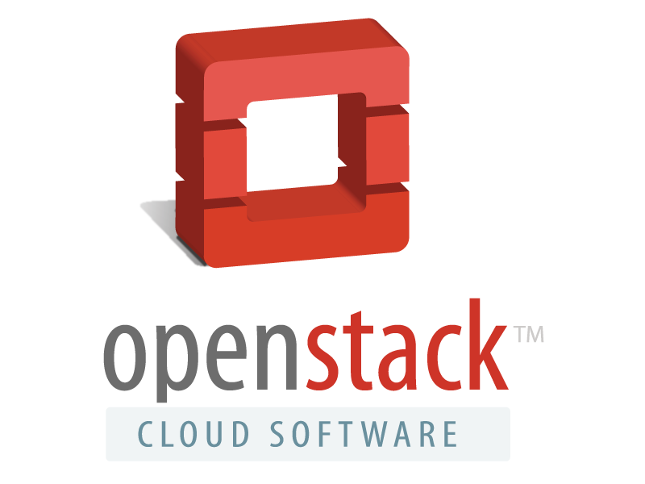

Varunkumar Nagarajan
Disclaimer: The contents in this presentation are only mine and it has got nothing to do with my employer
Cloud?
As a developer, do we need to worry about it? Yes, we should.
VLike - Like button for Gmail status
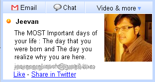
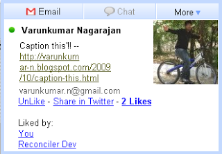
Facebook Filters
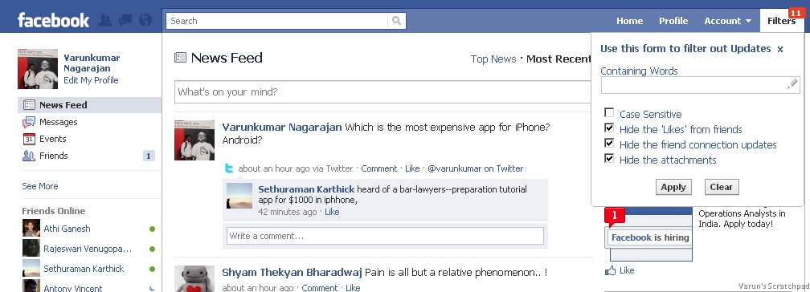
Twitter Filters
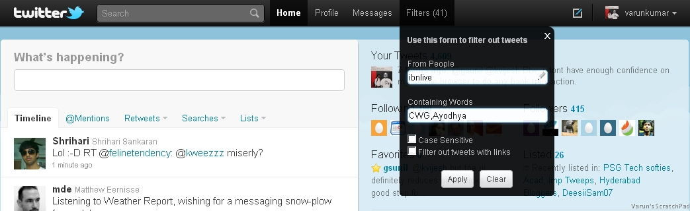
Stat Engine
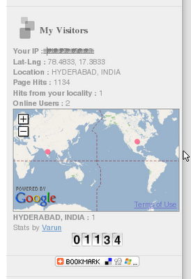
Visual Comment Engine
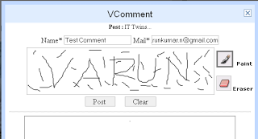
VServices
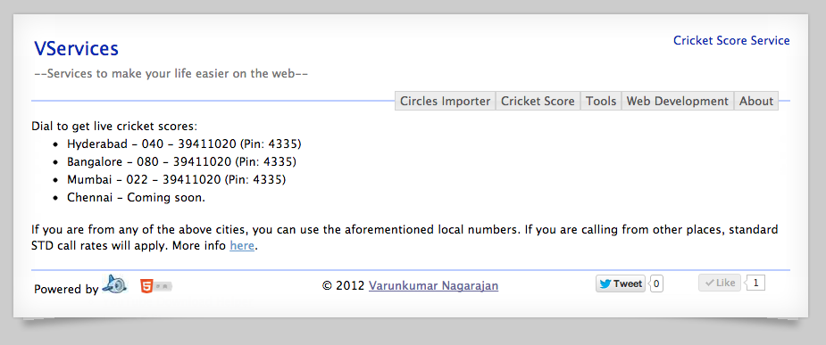
Arduino Game Controller
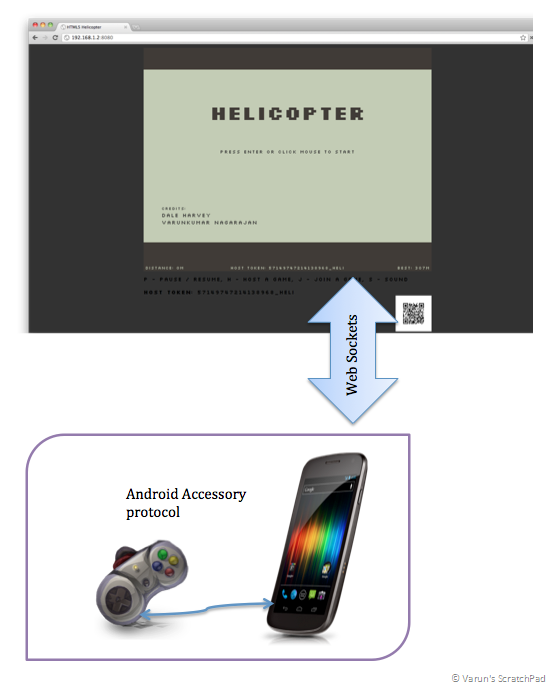
VBot - Quadbot
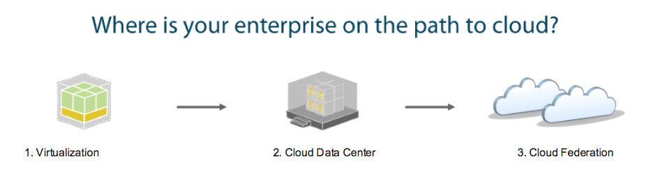
Hypervisors provide abstraction between the apps and the hardware
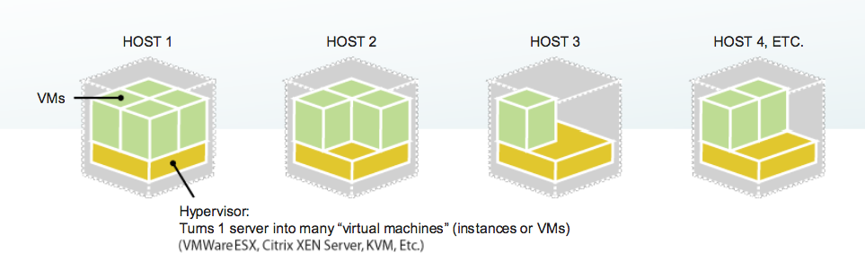
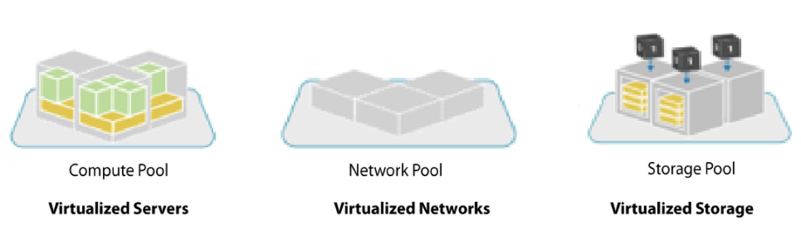
"VM Sprawl" can make things unmanageable very quickly
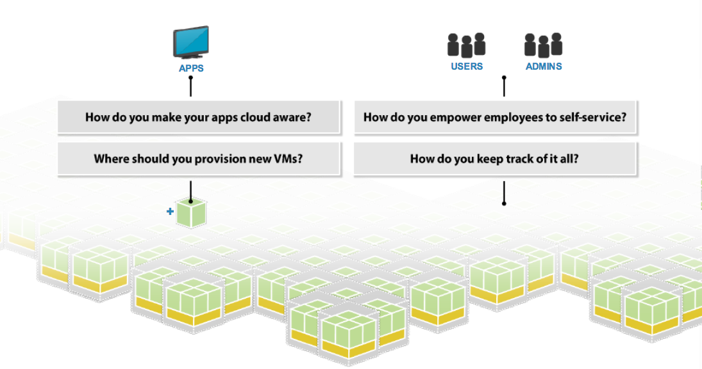
"VM Sprawl" can make things unmanageable very quickly
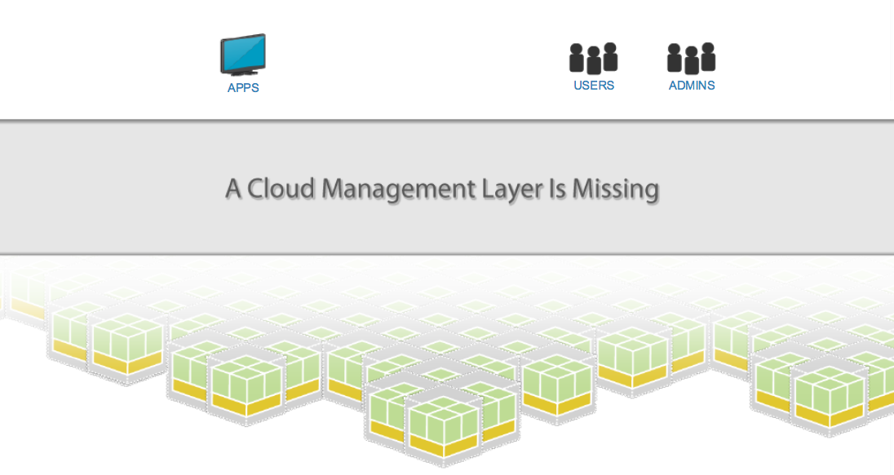
A new management layer which adds automation and control
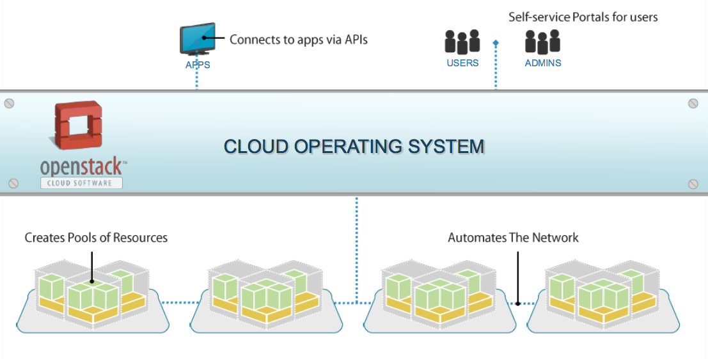
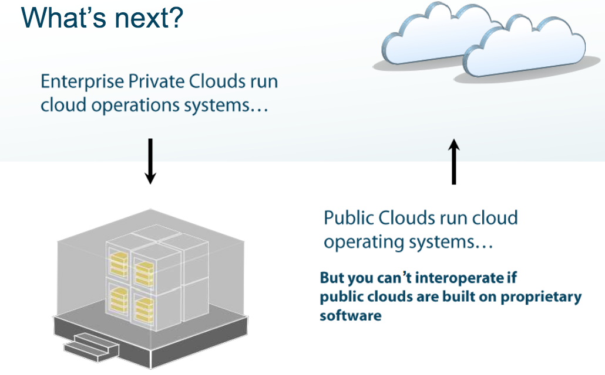
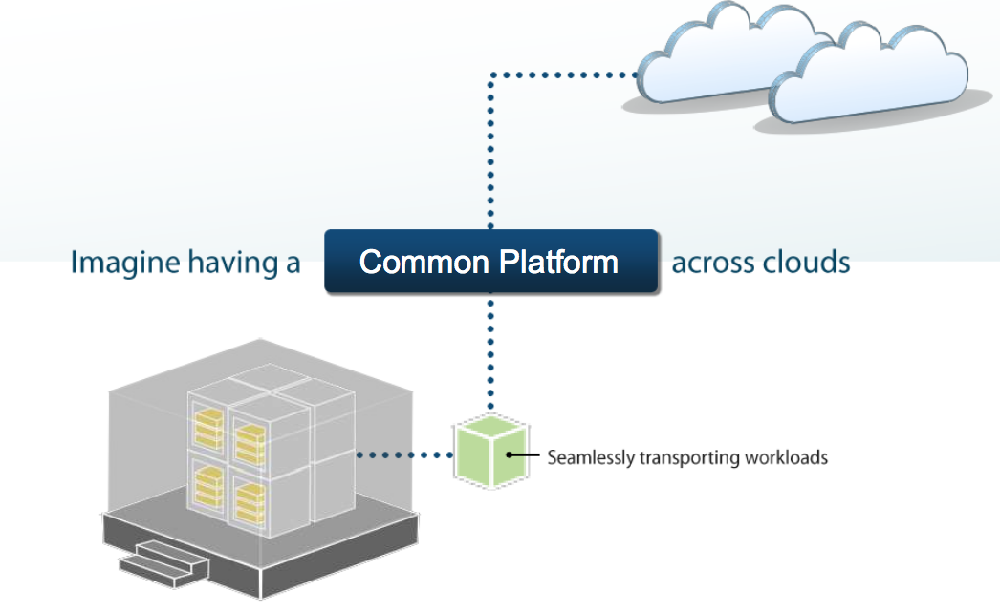
OpenStack is Open source software powering Private and Public Clouds
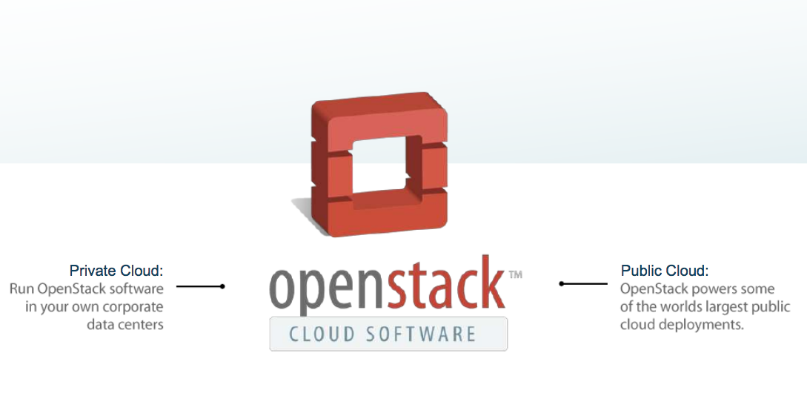
Connecting resources to create global resource pools
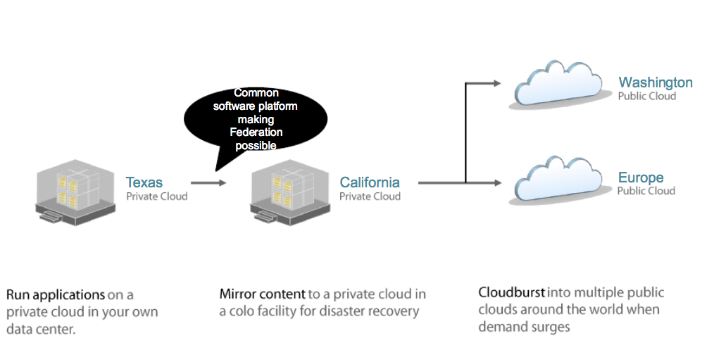
Definition: OpenStack is a Cloud Operating System, that takes resources such as compute, storage, network, virtualization technologies and controls those resources at a data center level.
Mission: To produce the ubiquitous open source cloud operating system that will meet the needs of public and private cloud providers regardless of size, by being simple to implement and massively scalable.
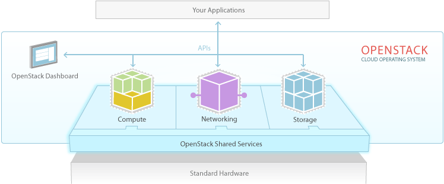
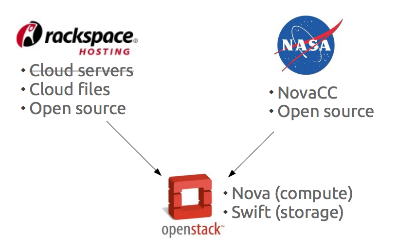
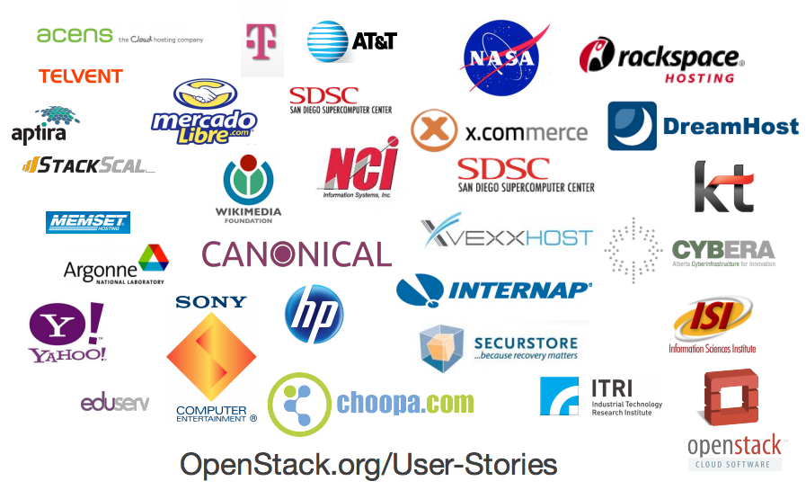
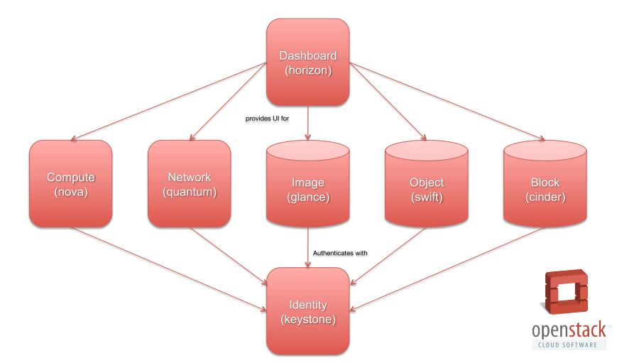
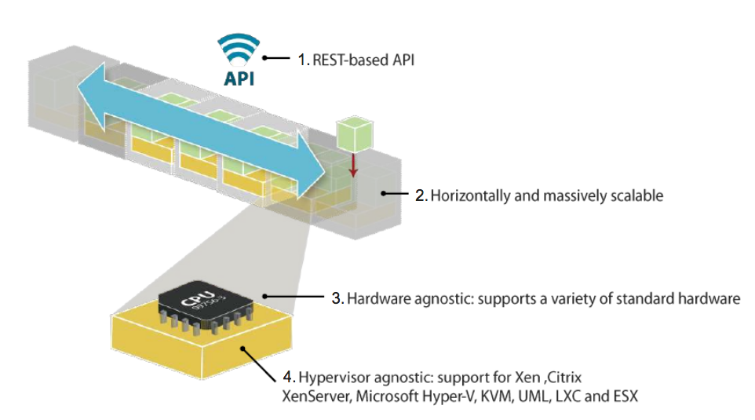
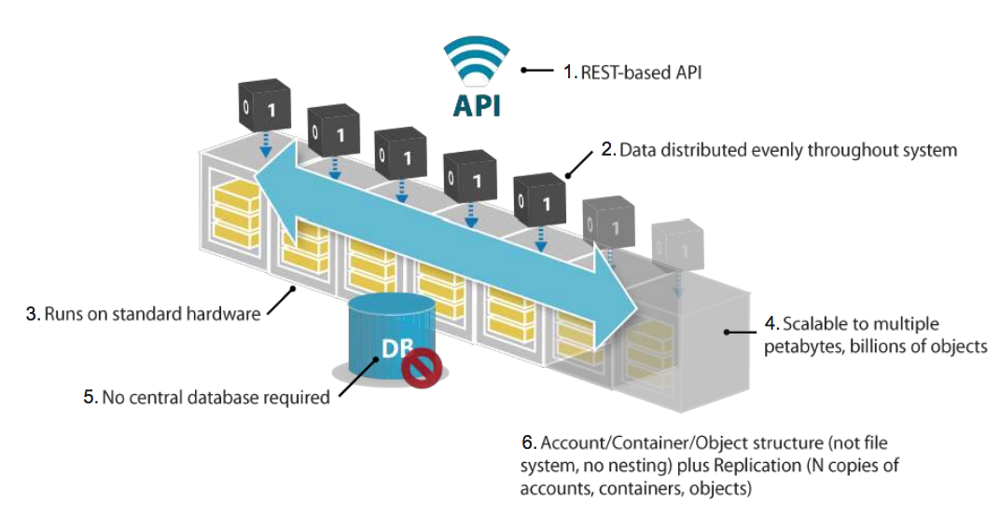
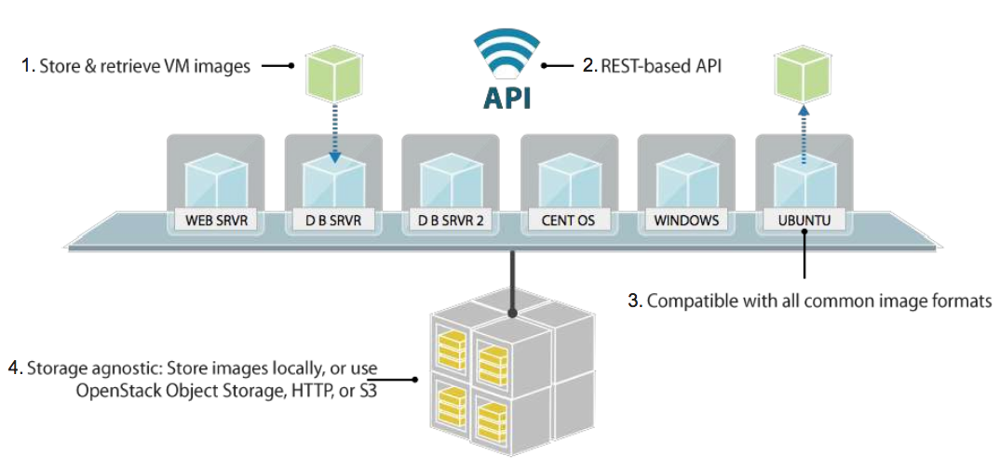
For latest info:
Thank you
@varunkumar